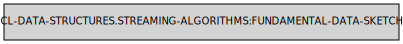

Streaming Algorithms Reference
This section contains reference of the data sketches.
Symbols in the package CL-DATA-STRUCTURES.STREAMING-ALGORITHMS:
BLOOM-FILTER
Lambda List:
(RANGE &KEY HASH-FN SPACE COUNT KEY HASHES DATA-SKETCH)
Arguments:
- RANGE, Input for the creation of the bloom filter.
- SPACE, Positive-fixnum. What is the bloom vector size?
- COUNT, How many bits are used for each item?
- KEY, Function used to extract value for to hashing.
- HASHES, Optional hashes vector. Needs to be supplied in order to ensure that the same hash values are generated between different filters.
- DATA-SKETCH, Instead of the bits and the hash-fn, the user can pass a data-sketch argument.
Description: Creates bloom filter out of elements in the range. Bloom filter is memory efficient data structures allowing to check if an item is absent from the range (if AT returns nil, the item is certainly absent, if at returns T item either present or not).
Returns: Instance of the fundamental-data-sketch class. Use cl-ds:at to check if element is present. False positives are possible, false negatives are not possible.
APPROXIMATED-COUNTS
Lambda List:
(RANGE &KEY HASH-FN SPACE COUNT KEY HASHES DATA-SKETCH)
Arguments:
- RANGE, Object to aggregate.
- HASH-FN, Hashing function. SXHASH will do for strings.
- SPACE, Positive integer. Size of the counters array
- COUNT, Number of hashing functions used.
- DATA-SKETCH, Instead of the bits and the hash-fn, the user can pass a data-sketch argument.
Description: Calculates estimated counts using Min-Count sketch algorithm. This requires only a constant amount of memory.
Returns: Instance of the fundamental-data-sketch class. Use CL-DS:AT to extract count estimate for element from it. CL-DS:SIZE can be used to extract the total size of range that was aggregated.
Notes:
- Quality of the estimate directly depends on DEPTH and WIDTH.
- Sensitive to a hash function. Large avalanche factor is very helpful.
APPROXIMATED-SET-CARDINALITY
Lambda List:
(RANGE &KEY BITS HASH-FN KEY DATA-SKETCH)
Arguments:
- RANGE, Object to aggregate.
- BITS, How many bits per register should be used? Should be at least 4, and 20 at most. Large values are beneficial for high accuracy of the result but will require more memory.
- HASH-FN, Hashing function. SXHASH will do for strings.
- DATA-SKETCH, Instead of the bits and the hash-fn, the user can pass a data-sketch argument.
- KEY, A function used to extract value from each element.
Examples:
(LET ((DATA
(CL-DATA-STRUCTURES:XPR (:I 0)
(WHEN (< I 500000)
(CL-DATA-STRUCTURES:SEND-RECUR (RANDOM 99999999999) :I (1+ I))))))
(PROVE.TEST:OK
(< 490000
(CL-DATA-STRUCTURES:VALUE
(CL-DATA-STRUCTURES.STREAMING-ALGORITHMS:APPROXIMATED-SET-CARDINALITY
DATA :BITS 20 :HASH-FN #'SXHASH))
510000)))Description: Calculates the estimated set cardinality using the HyperLogLog algorithm. This requires only a constant (and modest) amount of memory.
Returns: Instance of the fundamental-data-sketch class. Use CL-DS:VALUE to extract estimate from it.
Notes:
- This algorithm gives a solid estimate for large sets, not so good for small sets.
- Fairly sensitive to a hash function. Large avalanche factor is very helpful.
- Can be used to (for instance) estimate number of keys before creating a hash table. A good estimate of size minimizes rehashing and therefore reduces both memory allocation and time required to fill the hash table.
UNION
Lambda List:
(FIRST-SKETCH &REST MORE-SKETCHES)
Description:
Creates new data-sketch from the provided. Can be used to join sketches build on different data chunks.
CLEAN-SKETCH
Lambda List:
(FUNCTION &REST ARGUMENTS &KEY HASHES HASH-FN SPACE COUNT BITS)
Description:
Creates a new, empty data-sketch that would be produced by the function. New data-sketch can be cloned and passed as :data-sketch. This allows to keep compatibility between results of call to the streaming function.
FUNDAMENTAL-DATA-SKETCH

Description: The base class of all data sketches. Instances of this class can be passed to streaming algorihms as initial states, cloned and combined into unions.